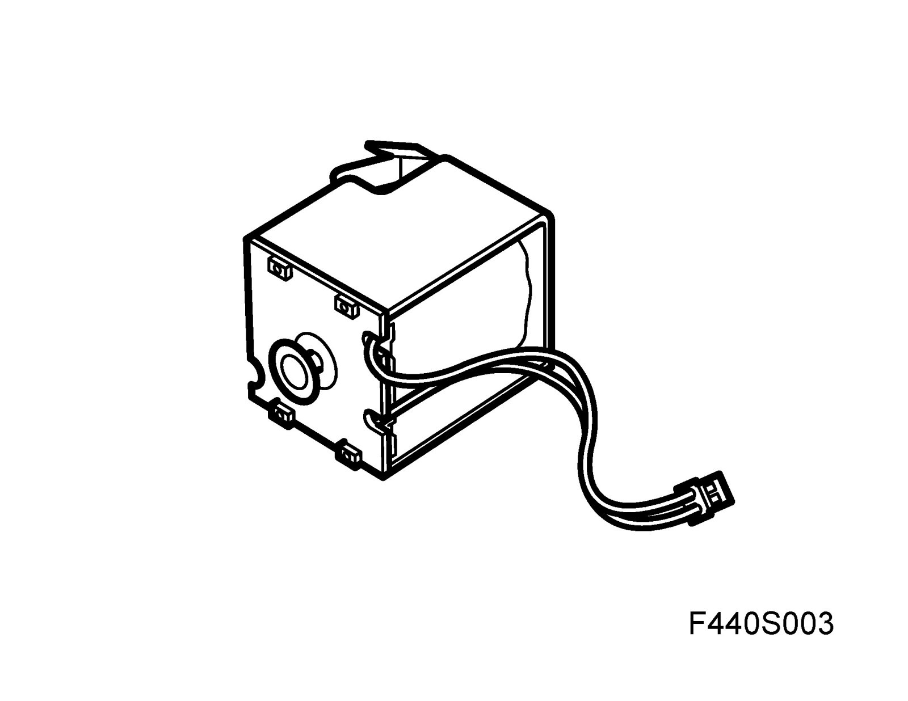
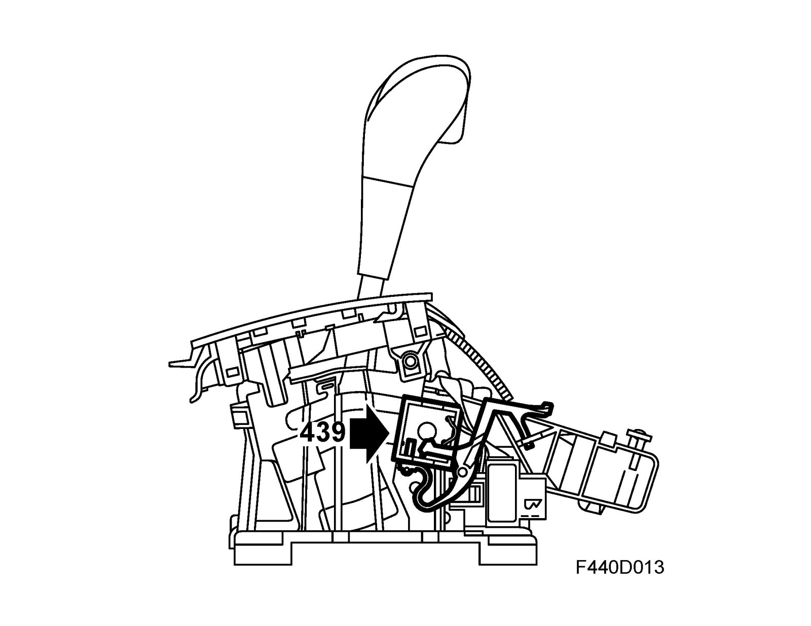
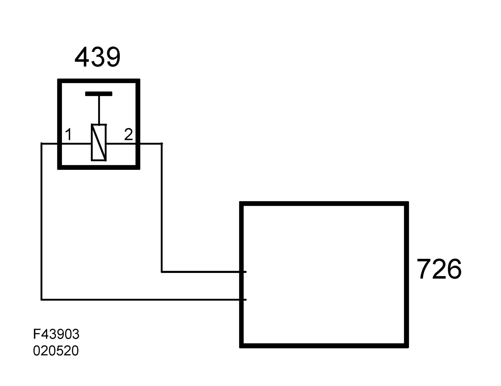

Shift Interlock Solenoid: Description and Operation
Selector lever SHIFT LOCK solenoid (439)Location
Selector lever SHIFT LOCK solenoid (439)

Main task
To prevent the selector lever moving from P or N on an automatic transmission before the brake pedal is depressed.

Type
Electromagnetic.
Connection
The solenoid is controlled by the Selector lever control module (726). In the event of an electric malfunction, it is possible to manually release the selector lever via the solenoid.
